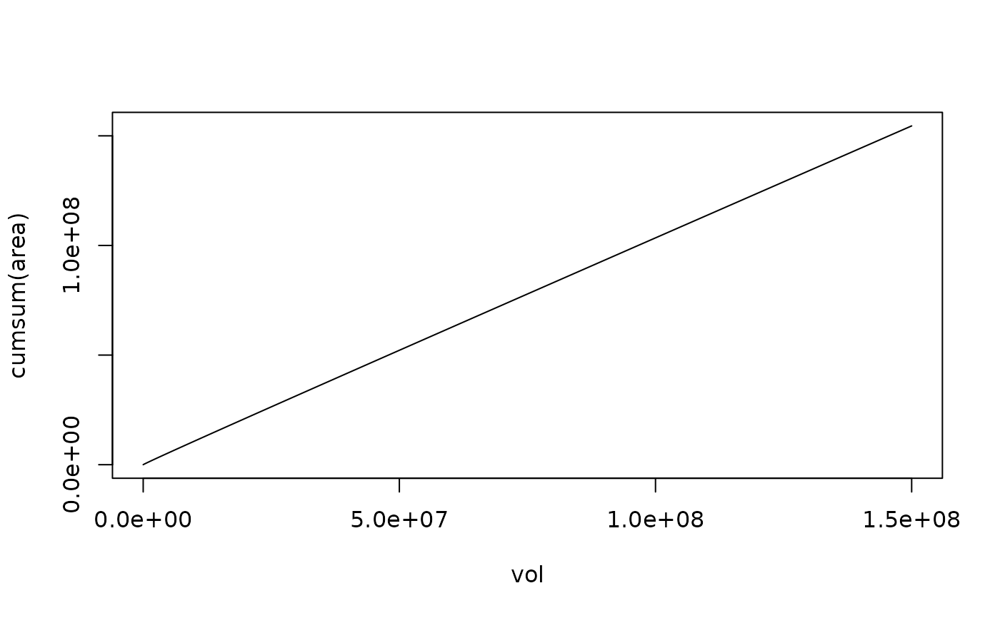

Hypsographic Functions for Conical Lake Geometry
areaFunction.RdThe functions calculate area resp. volume of a lake with a conical depth profile.
Examples
level <- seq(0, 50, 1)
amax <- 9e6
zmax <- 50
area <- areaFunction(level, zmax, amax)
vol <- volumeFunction(level, zmax, amax)
plot(vol, cumsum(area), type="l")

(vol - cumsum(area)) / vol
#> [1] NaN -2.00000000 -0.87500000 -0.55555556 -0.40625000 -0.32000000
#> [7] -0.26388889 -0.22448980 -0.19531250 -0.17283951 -0.15500000 -0.14049587
#> [13] -0.12847222 -0.11834320 -0.10969388 -0.10222222 -0.09570312 -0.08996540
#> [19] -0.08487654 -0.08033241 -0.07625000 -0.07256236 -0.06921488 -0.06616257
#> [25] -0.06336806 -0.06080000 -0.05843195 -0.05624143 -0.05420918 -0.05231867
#> [31] -0.05055556 -0.04890739 -0.04736328 -0.04591368 -0.04455017 -0.04326531
#> [37] -0.04205247 -0.04090577 -0.03981994 -0.03879027 -0.03781250 -0.03688281
#> [43] -0.03599773 -0.03515414 -0.03434917 -0.03358025 -0.03284499 -0.03214124
#> [49] -0.03146701 -0.03082049 -0.03020000